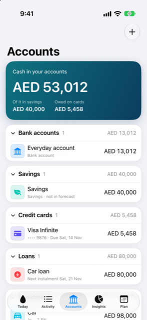

Guide › Accounts, cards and people
The Accounts page
Your banks, savings, wallets, cards, loans and people in one list.
Accounts lists everything that holds or owes money, grouped into sections you can collapse. It is the page for your whole position: what you could spend, what the cards owe, and where each account stands.

When to use it
- To see your cash at a glance, and how much of it sits in savings versus what cards owe.
- To open one account and read the numbers that matter for its type.
- To add a new account or a person, or bring in a statement or screenshots.
- To rename an account, change its logo, include or exclude it from the forecast, or archive it.
Step by step
- Open the Accounts tab. The top card, Cash in your accounts, adds up bank accounts, savings and wallets in your main currency; card debt is not taken off it. Below the figure are Owed on cards and, when your savings are not zero, Of it in savings.
- Scroll to the sections. Each one — Bank accounts, Savings, Cash and wallets, Credit cards, Loans, Investments, Assets, People — shows how many accounts it holds and, when a single total can be worked out in one currency, that total. Sections you do not use do not appear.
- Tap a section's header to collapse or open it.
- Tap a row to open it. Banks, savings, wallets, cards and loans open as a card. Investments open the holding's page, Assets open the staged purchase, People open the person.
- Tap the big card to flip it. The front shows the balance (or You owe for cards and loans) and the figures for its type. The back shows more, plus its last few movements.
- On the back of the card, tap Spending to see where its money went, Transactions for everything with running balances, or Details to change the account.
- To add something, tap the plus button and choose Add an account, Add a person, Import statements or Update from screenshots.
Good to know
- The back of each card carries the numbers for its type: for a card its statement and due dates and the next bill, for a loan the instalment, how often, how many are left and who pays it, for a bank its lowest point in the forecast and recent movement.
- In Details you can rename the account, choose its logo, include or exclude it from the forecast, and archive the account after a confirmation. For anything other than a card or a loan you can also set a minimum balance to keep. For a card you set its billing cycle. An archived account keeps its history but disappears from forms and the forecast.
- A section's total shows only when one currency covers it — for money accounts, when every account in it uses the same currency; for investments, when their value can be worked out. A warning on the top card, N accounts left out: no exchange rate, tells you when an account in another currency could not be converted.
- For an account in another currency, the account form asks you for an exchange rate once, when no rate is known yet. On the day you enter a rate, yours wins; a newer fetched rate replaces it at the next refresh.
Related
Something unclear or missing? Write to support@raveniq.ai and say which page.